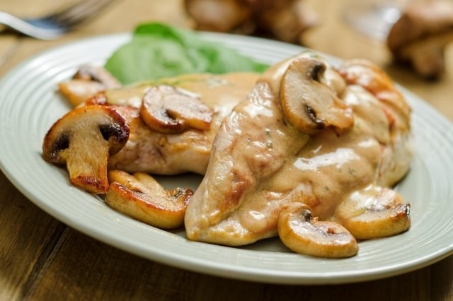

Pollo en Salsa de Hongos

Pollo con Hongos Esta clásica receta de pollo con champiñones te va a gustar mucho. Tiene champiñones salteados con mantequilla y flameados con vino blanco y una cremosa salsa para acompañar, que queda perfectamente tersa con la leche entera.
Preparación
Para la salsa, en una ollita calienta la mantequilla a fuego bajo y saltea la cebolla y el ajo, añade los champiñones y cocina dos minutos. Agrega la harina y cocina hasta que tome color. Incorpora la leche entera Santa Clara y cocina a fuego bajo sin dejar de mover 20 minutos o hasta que espese. Sazona y enfría un poco, licúa hasta que quede una salsa tersa. Reserva.
Para los champiñones, en una sartén derrite la mantequilla a fuego bajo y saltea los champiñones por 4 minutos. Agrega el vino blanco de golpe y deja reducir el líquido casi por completo. Sazona y reserva.
Salpimenta las pechugas por ambos lados y fríe en una sartén a fuego medio con aceite hasta que estén cocidas y doraditas.
Sirve las pechugas con la salsa y decora con los champiñones.